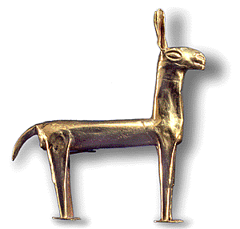
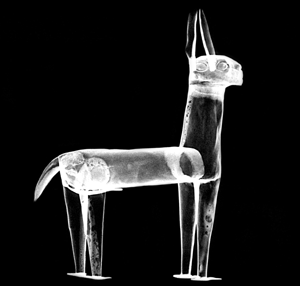

Not all South American goldwork is cast. The goldsmiths of Peru specialised in making objects from thin, hammered gold sheet like these tiny figurines of llamas. They were interred in burials at sacred places by the Inca. AD 1400-1500.
 Using radiography it was possible to see the joins between the pieces of gold sheet making up the hollow figurine. They were joined using solder. Although only 6.5 cm high, the figurine was made of thirteen separate pieces of gold.
For a full list of publications: Scientific Publications